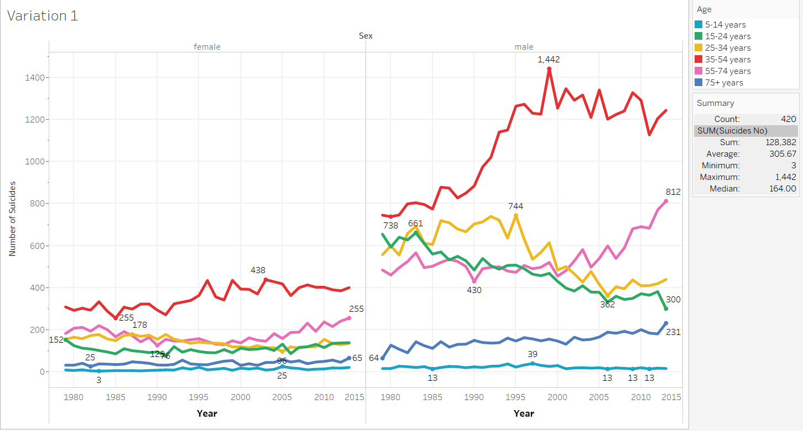
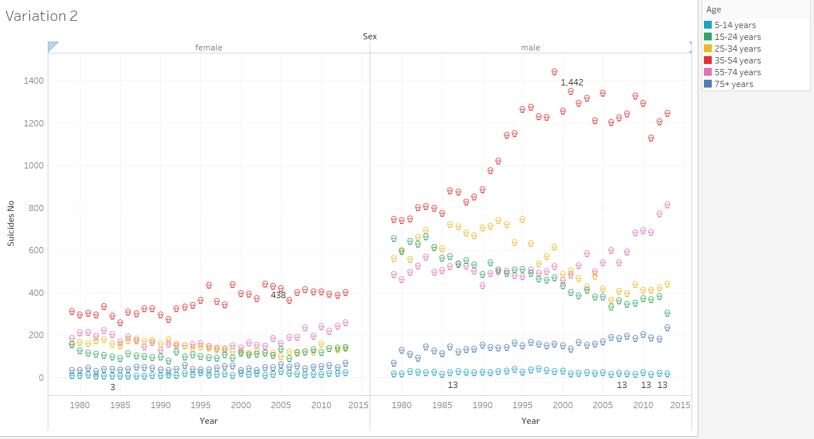
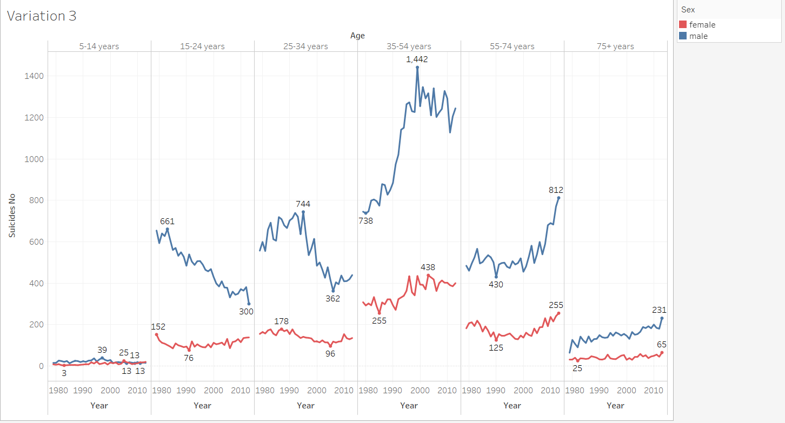

This variation explores the general comparison between males and females
of different age groups between the years 1979 and 2015. It shows a rising or falling
trend which views can see and explore. It also shows the maximum and minimum value so a
viewer can do research as to what event during that year may have caused it. We can also
see that aside from the children, Males suicide rates are much higher than Females
suicide rates. I thought about getting rid of the background grid and keeping it as simple
as possible, but that makes it harder for the viewer to read the data.

This variation shows the same type of data as previous variation, but the difference is in
the use of icons. I wanted to get a little creative and so this data uses a skull icon which
signifies death. It is still able to tell the trend and now we can compare individual points
easily. The color is used to signify the age group just as before.

This variation was created to see the data from an alternative point of view. In this
visualization we have Nominal data sex being represented by colors, as opposed to the ordinal
data (Age range) and we have different column for different age groups. The colors are bright
and easily distinguishable, allowing the viewer to quickly see all the blues (or all the reds)
and compare them against each other, or compare the blue with red in each column. This data also
shows the maximum and minimum for each gender which makes it easier to quickly tell the difference.